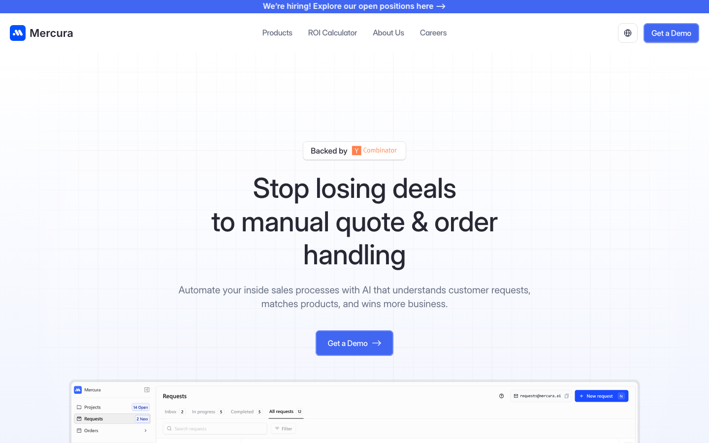
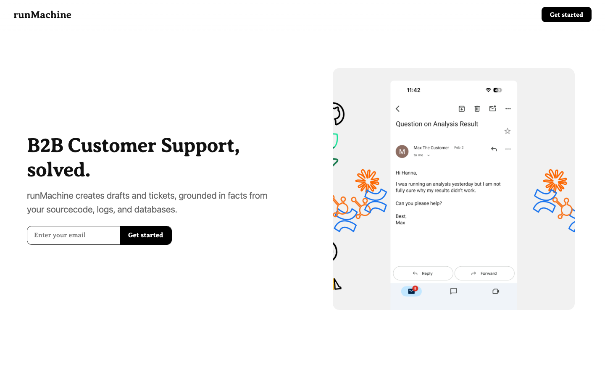

CorpusStudio
A writing environment that surfaces emergent patterns from a corpus of prior work while you write. With Chelse Swoopes, Daniel Buschek and Elena Glassman.
DUONG HAI DANG · PHD HCI · MUNICH
Eight first-author papers at CHI, UIST and IUI on how people write and create when AI joins the work. Then a YC-backed startup that turned quotes from days into minutes. Now building the next thing in stealth.
A LIVING PAINTING · GENERATED WITH VEO · THE OLD WORLD MEETS THE NEW TOOLS
Everything, in order. 2021 to 2026.
PhD at the University of Bayreuth with Daniel Buschek. Research stays at Autodesk, Meta Reality Labs and Harvard. One question underneath all of it: how do people keep authorship and control when generative models join the work?
A writing environment that surfaces emergent patterns from a corpus of prior work while you write. With Chelse Swoopes, Daniel Buschek and Elena Glassman.

How people write with LLMs using diegetic and non-diegetic prompts. Study with 129 writers: given the choice, people prefer choosing between suggestions over instructing the model.

Iterative, expressive prompting for building fictional worlds: paint regions, mix text and image prompts, refine tile by tile. Built at Autodesk Research.

An editor that continuously summarizes each paragraph in the margin, reverse outlining with AI. Writers used it to reflect on and revise their drafts.

Opportunities and challenges of prompting as an interaction paradigm for creative applications of generative models. His most cited work.

How users control generative image models with multiple sliders, with and without feedforward previews of what each slider will do.

Point your phone at any text and get a summary. An early probe of automated summarization as an everyday tool.

Visual analytics for motion elicitation data: a learned 2D embedding turns hours of full-body recordings into an explorable map.
Context-aware LLM assistance for everyday tasks, built and studied at Meta Reality Labs. With Ben Lafreniere, Tovi Grossman, Kashyap Todi and Michelle Li.
Research told me how people want to work with AI. Building companies taught me what they pay for.

AI quote and order automation for distributors and manufacturers. RFQs that took days now take minutes: product data read from emails, Excel and PDFs, matched against catalogs, written straight into the ERP.

AI agents for B2B customer support. Forward a support email and the agent reads your source code, logs and databases, then hands you an evidence-based draft ready to send.
In stealth on the next thing. The thread running through it: assistance that does not wait for a prompt.
A LIVING PAINTING · GENERATED WITH VEO